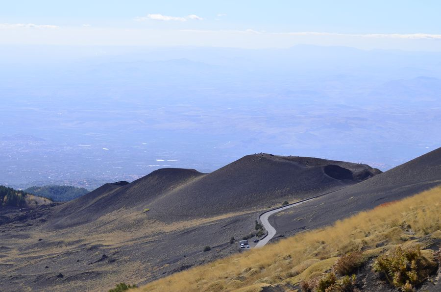
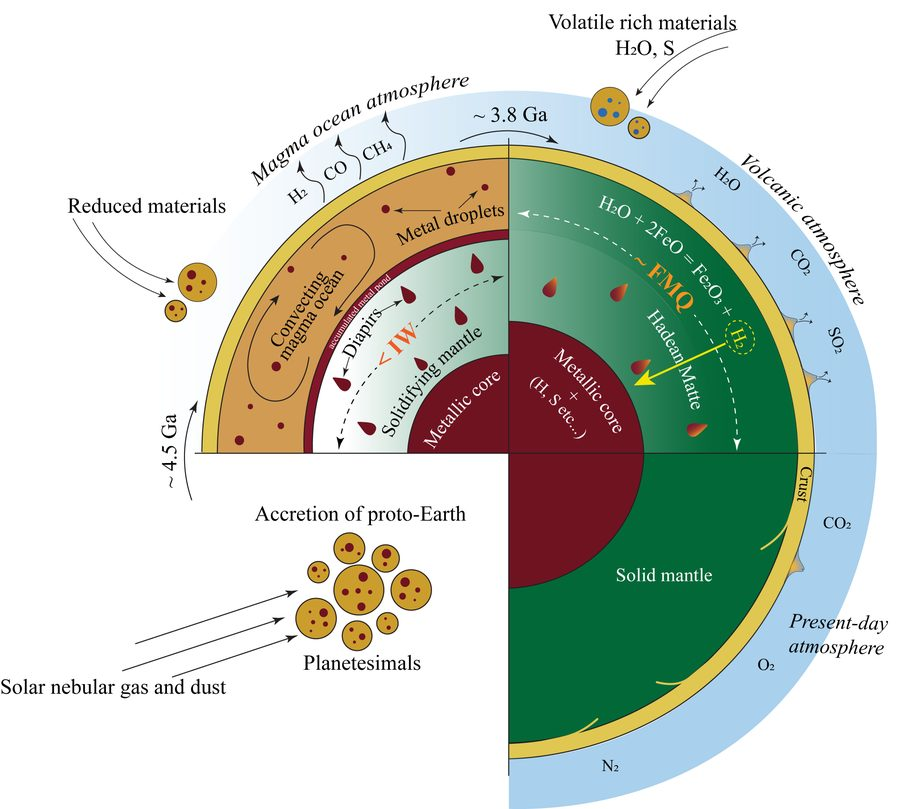
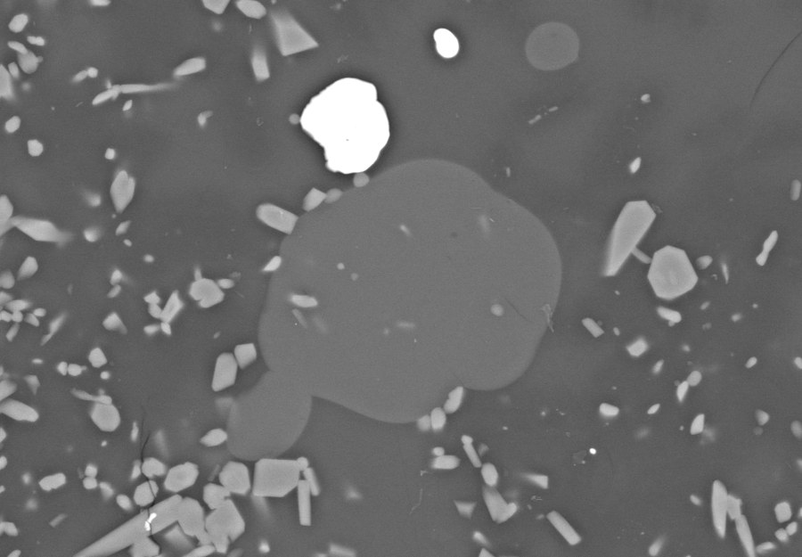
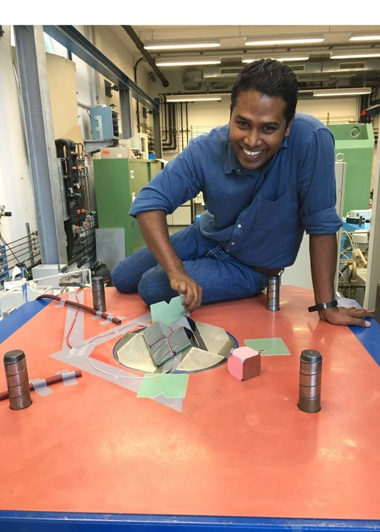
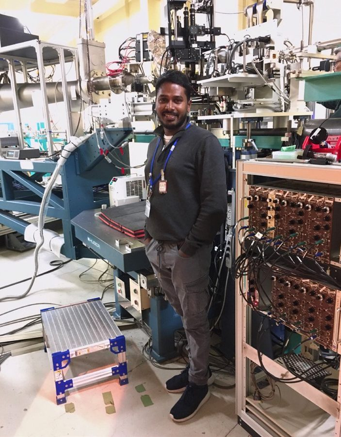
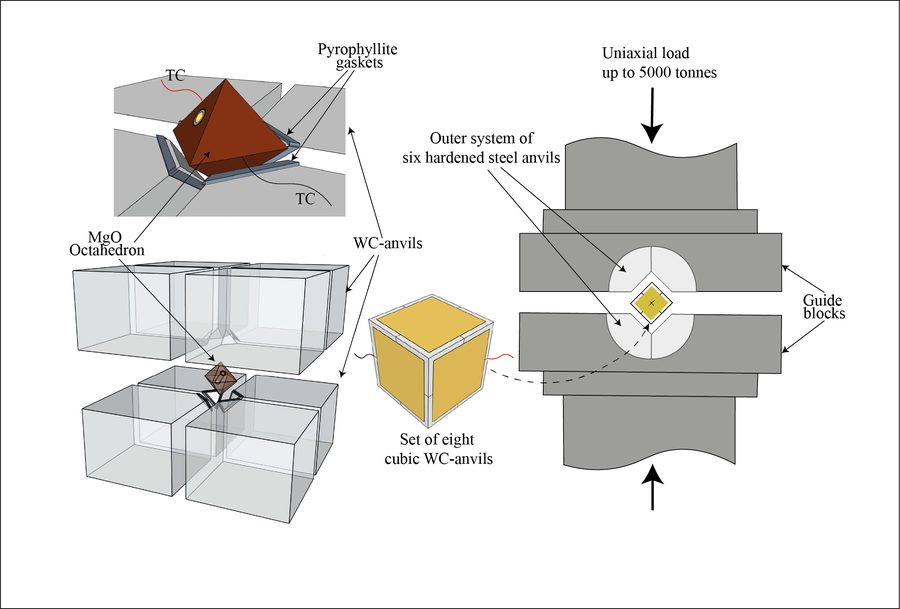
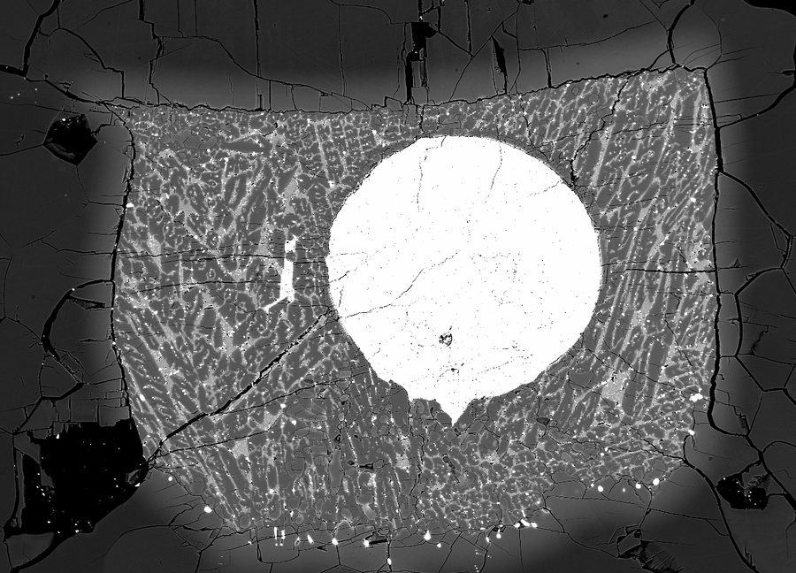

Presses, installed and repaired
An automated end-loaded piston cylinder (MAVO PRESS LPC 250–300/50, Voggenreiter) tested and commissioned at CRPG, Nancy. A QUICKpress piston cylinder (Depths of the Earth) diagnosed and repaired at Camerino.


I use high-pressure, high-temperature experiments and a broad suite of analytical techniques to study the physical and chemical processes that run the Earth's interior: how metal, sulphur and fluids are shared out deep below, how magma forms, rises and erupts at volcanoes — and, lately, how what a volcano throws out can be turned into useful materials.
Research interests
Techniques
Sulphur is an unremarkable element with a disproportionate say in what the Earth is made of. At the pressures of the mantle and the core it governs which metals sink and which stay behind, and it leaves a chemical record inside the sulphides and sulphide inclusions found in diamonds. My doctoral work established how pressure, temperature and composition control the oxygen content of mantle sulphide melts — the basis for using that oxygen as a geothermometer — and measured sulphur solubility in peridotite melt at upper-mantle conditions.
The second part is hydrogen and fluids. Fluids carry the chemical signature of the interior and are nearly impossible to sample without changing them; I developed the single-crystal diamond trap (SCDT), a method that uses a pair of single-crystal diamonds to capture a fluid at pressure and recover it intact. At J-PARC in Japan, in-situ neutron diffraction located deuterium inside the atomic structure of iron sulphide at high pressure and temperature — relevant to how much hydrogen planetary interiors might hold.
 A core and a mantle, about a millimetre across — metal–silicate run product in back-scattered electrons
A core and a mantle, about a millimetre across — metal–silicate run product in back-scattered electrons

Etna's summit craters from the southern flank
Whether a volcano sighs or explodes comes down, to a surprising degree, to how viscous its magma is. Viscosity sets how fast melt rises, whether gas escapes quietly or builds until the rock shatters, and therefore what an eruption does to the people living nearby. It depends on temperature, on dissolved water, on composition — how much silica, aluminium and alkali the melt carries — and on the crystals, down to the nanoscale, that form in it on the way up.
Measuring it is harder than it sounds, because a melt reorganises itself while it is being measured. Much of this work is about the measurement: combining viscometry (concentric cylinder, micropenetration), calorimetry (conventional and flash DSC) and in-situ Raman and Brillouin spectroscopy to tie viscosity to the structure of the melt; calibrating the calorimetric shift-factor method so that different laboratories agree; and watching crystals and bubbles appear in real time at a synchrotron. For the Agnano–Monte Spina trachyte of Campi Flegrei, that combination showed that the melt begins to rearrange at the nanoscale within minutes just above its glass transition, so that standard viscometry can overestimate its viscosity by up to an order of magnitude — and that losing its water on the way up stiffens the melt about a hundred thousand-fold, ten times more than the usual models predict, with consequences for how it degasses, where it fragments and how it erupts. The same approach runs through work on haplogranitic melts, on nanolite formation and on the magmas of Etna, Colli Albani and Hunga.
Carbonatites are igneous rocks made mostly of carbonate rather than silicate — molten limestone, in effect — and they hold the world's largest deposits of rare-earth elements and niobium. Only one volcano erupts them today, Oldoinyo Lengai in Tanzania. Where the carbonate liquid comes from has been argued over for decades: a carbon-rich mantle melting directly, or an ordinary alkaline magma that crystallises so far that a carbonate liquid finally separates from it.
At CRPG in Nancy I tested the second idea the slow way. Starting from the composition of Lengai's own parental magma, a magnesium-rich nephelinite with modest water and carbon dioxide, I crystallised it step by step in a piston cylinder at the pressure of the volcano's lower-crustal reservoir, removing the crystals at each step and carrying the residual liquid on to the next. Late in the sequence, once most of the magma had crystallised, droplets of calcium-carbonate melt appeared in a phonolitic glass. Letting the same magma crystallise in one go, crystals and liquid together, never gets there.
The point is that no special, carbon-rich mantle is needed. Fractional crystallisation of a common magma, deep in the crust, is enough to make a carbonatite — and the sodium-rich lavas Lengai erupts are a later derivative of that first calcium-rich liquid. The work was done with Lydéric France, Pierre Condamine, Célia Dalou and Marie-Camille Caumon.

A droplet of carbonate melt, about twenty micrometres across, in phonolite glassA volcano is a natural glass furnace, and ash is a raw material with its chemistry already decided. At CNR-ISSMC in Faenza — an institute built around ceramics — I work with biopolymer and materials science colleagues in Faenza and at the University of Trento on turning volcanic ash into functional ceramic materials. The same thermal analysis and structural tools that characterise a magma characterise a sinter.
It is the surface expression of the rest of the research: understanding a melt well enough to know what it can become. The project is CERAMICVOLC, led by Danilo Di Genova.
 Oxidised scoria on Etna — the raw material
Oxidised scoria on Etna — the raw material
Papers, methods, beamtimes, instruments, projects and collaborations, newest first. Click a card to read more.
— co-authors across papers. Larger circles have worked with me more often; point at one to see who it is. Built from the publication list, so it grows by itself.
A profile for the European Association of Geochemistry, and the write-up of the SIMP doctoral thesis prize in Plinius.

The European Association of Geochemistry asked about the path from Peradeniya to Bayreuth to Camerino, what privilege looks like from the inside, being the first in a family to go to university, and the job I would do if I were not doing this one.
Read the profile
The Società Italiana di Mineralogia e Petrologia awarded the 2024 Premio Tesi di Dottorato to the thesis on sulphides and aqueous fluids in the Earth's interior. Plinius asked what drew me to geology in the first place: Voyager 1 is fifteen billion miles away and still sending data — so how do we study the inside of our own planet?
Read it in PliniusA beamtime is a short, fiercely contested window on an instrument most scientists never touch — yours for a few days if the proposal wins. Everything is planned to the minute, because there is rarely a second attempt. It is the part of the work that most rewards a good team.
An automated end-loaded piston cylinder (MAVO PRESS LPC 250–300/50, Voggenreiter) tested and commissioned at CRPG, Nancy. A QUICKpress piston cylinder (Depths of the Earth) diagnosed and repaired at Camerino.
A modified 18 mm multi-anvil assembly with a thicker LaCrO₃ resistive heater, developed and tested at the Bayerisches Geoinstitut. A modified Paris–Edinburgh cell for high-pressure experiments at SOLEIL and ESRF.
I develop Python tools for instrument control, data acquisition and calibration — the kind of code that makes a measurement repeatable by someone who is not the person who built the instrument.
Co-supervision of master's research projects at Bayreuth (sulphide melt oxygen content) and CRPG (Raman spectroscopy of melt inclusions); currently co-supervising students at Roma Tre University.
If you dug a hole beneath your feet and climbed down it, two things would happen: it would get hotter, and it would get heavier, with the weight of everything above pressing in. A rock in your pocket would feel it too. What happens to that rock under those conditions is, in a real sense, what builds the world — volcanoes, mountains, oceans, the atmosphere — over billions of years.
The trouble is that we cannot go and look. The deepest hole ever drilled reaches about fifteen kilometres; the centre of the Earth is 6,370 kilometres down. Everything below that first scratch has to be reached another way.
So we scale it down. A press squeezes a very small sample from several directions at once, and heats it at the same time, until it is living at the pressure and temperature of somewhere hundreds of kilometres below. It is not so different from the pressure cooker in your kitchen — only rather more so. We cook the rock, take it out, and look very carefully at what happened. At a synchrotron, we can sometimes watch it while it is still cooking.

Cook
LookOne of my first experiments, as a master's student, was a metal–silicate run. When I took it out there was a sphere of metal sitting inside a shell of silicate melt — a core, surrounded by a mantle. A planet, in miniature, a millimetre across. I understood what I was looking at and was completely taken by it. It is still the most beautiful thing I have made. That is it above, on the right — and in the small picture in the corner of the front page.
My honest answer is: not really. Nobody's week goes differently because of what I find out about four hundred kilometres down. What matters is what understanding it does to a person. Hold in your head what is happening that far beneath your feet — or four hundred thousand kilometres above your head — and you start seeing the world from somewhere else. We are very small, inside something very large, made of material that has been recycled for billions of years.
Reading Neil deGrasse Tyson's Starry Messenger changed rather more for me than how I think about astronomy. Not everyone who studies the inside of the Earth comes away with that perspective; some do, and those are the people I would like leading us. I believe science is only a training. Having your own mission — to become a good person — matters more in a life than anything it trains you for.
Spend long enough looking at the inside of the Earth and one fact becomes impossible to ignore: nothing down there is finished. Rock melts, rises, cools, weathers into soil, is buried, and melts again. What looks like solid ground is a slow liquid with a good disguise. The iron in a mountain and the iron in your blood came from the same place, and both are borrowed.
I find this steadying rather than bleak. If everything is in the middle of becoming something else, then so is whatever I am currently worried about — a stage, not a verdict. Geology is the slowest possible demonstration of a fairly simple idea: hold things a little more loosely. They were never going to stay forever as they are.
I co-supervise students and I am always glad to hear from people who want to work on something together. If you are looking for a project, curious about high-pressure experiments, melt rheology, volcanic materials, glass and ceramics or metals and alloys, or have a sample and no way to measure it — write to me. You do not need to have it all worked out first. Most of the good ones started as a vague question.